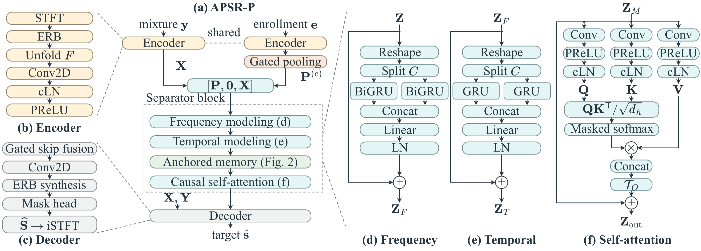
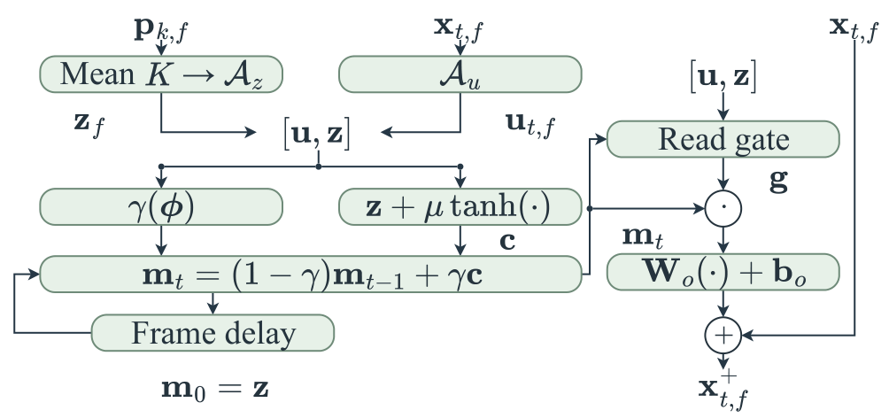

Target speaker
Mixture, estimate and target share the playback position.
Example details
- Trial key
- Full utterance
- Enrollment
- Confusion on full test
Research project · September 2026
for Causal Target Speaker Extraction
National Chi Nan University · National Taiwan Normal University
GitHub repositoryAPSR-P extracts a target voice from overlapping speech. A separate enrollment utterance identifies the requested speaker. Frequency-resolved enrollment anchors guide a bounded causal memory, while an enrollment-only state progresses across shared refinement blocks.
This page accompanies the research project. Listening examples use precomputed outputs; the full-test results below are reported separately from individual examples.
01 / Listening examples
Loading listening-example availability…
WSJ0 audio publication is pending confirmation of the applicable dataset permissions. Verified full-test results and the method are available below.
View the benchmark resultsHow to compare. Listen to the enrollment first. Compare Mixture → APSR-P → Clean target, then choose target B to extract the other voice from the same mixture.
Spectrograms. Frequency runs from 0 to 4 kHz, bottom to top. All panels share the same STFT-magnitude scale. Enrollment is a separate utterance; the other three tracks are time-aligned.
Local research preview · WSJ0 audio publication remains pending.
Eight mixtures were selected with a fixed random seed before checkpoint replay. Both target queries are retained. Scores shown with examples are for full utterances; playback uses the first up to 6 seconds, with up to 3 seconds of enrollment.
02 / Full-test evaluation
| Dataset | SI-SDRi ↑dB | SDRi ↑dB | PESQ ↑ | eSTOI ↑% | TCR ↓% | Status |
|---|---|---|---|---|---|---|
| WSJ0-2mix | 13.81 | 14.17 | 3.10 | 87.82 | 1.95 | Verified |
| WHAM! | — | — | — | — | — | Pending |
WSJ0-2mix: 6,000 target queries from 3,000 mixtures; seed 43, four refinement rounds. SI-SDRi and SDRi subtract each query's mixture baseline. TCR is target-confusion rate: 117/6,000. Remaining ablations and WHAM! results will be added when verified.
03 / Architecture
Shared encoders process the mixture and enrollment independently. Gated pooling forms frequency-resolved enrollment tokens. The separator combines frequency and temporal modeling, anchored memory and causal self-attention; the decoder predicts a complex mask for target reconstruction.


The anchor guides the candidate, update rate and read gate. Each block call initializes its own acoustic-time memory; readout uses the current updated state.
Model profile. 306,842 trainable parameters (312,986 registered); 4.923 G MAC/s for a 4-s mixture and 3-s enrollment. Neural operations are causal in STFT-frame order, with 16 ms of centered-STFT analysis lookahead. Cached streaming, complete output delay and real-time performance remain to be measured.
04 / Reproducibility
Training and inference code, the validation-selected model weights, configurations and evaluation instructions are planned for release after acceptance. Updates will appear in the APSR-P repository.
The checkpoint was selected by validation SI-SDRi at epoch 102. Complete benchmark scores come from the verified test evaluation. Local example scores are recomputed from checkpoint replay; small numerical differences across environments are disclosed.
Full mixture and enrollment utterances are used for inference. Mixture, both targets and both estimates share one gain to prevent clipping. Enrollment only receives peak reduction when needed. Playback-position sharing supports comparison; it is not a streaming-latency measurement.
WSJ0 source material remains subject to its original data-use terms and is separate from any future code license. The comparison layout was informed by Universal Speech Enhancement Demo and the LExt demo. No audio, figures or results from those sites are reused.